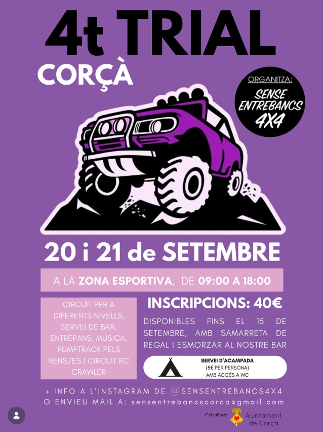

Trial
Directori oficial
Trials 4×4
Trials 4×4
a Catalunya
La referència dels amants del tot terreny a Catalunya. Aquí trobaràs tots els trials 4x4 i competicions off-road que es celebren arreu del territori. Des de l'Alta Garrotxa fins al Delta de l'Ebre, no et perdis cap prova.
Veure tots els trialsTrials 4×4 a Catalunya
Propers primers · Events passats al final
Sobre nosaltres
La comunitat 4×4 de Catalunya
4x4 Catalunya és el directori de referència per als aficionats als vehicles tot terreny a Catalunya. Reunim tots els trials i competicions 4x4 que es celebren al territori.
Ja siguis pilot experimentat o nou aficionat al món del 4x4, aquí trobaràs tota la informació actualitzada sobre els propers trials: dates, ubicacions, preus i contactes.
- ✅ Informació actualitzada i verificada
- ✅ Cobertura de les 4 províncies catalanes
- ✅ Tots els nivells de dificultat
- ✅ Events per a famílies i veterans